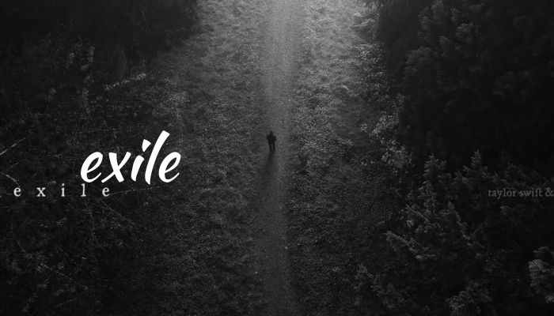

Exile-Taylor swift I can see you standin', honey With his arms around your body Laughin' but the joke's not funny at all And it took you five whole minutes To pack us up and leave me with it Holdin' all this love out here in the hall I think I've seen this film before And I didn't like the ending You're not my homeland anymore So what am I defendin' now? You were my town Now I'm in exile seein' you out I think I've seen this film before Hoo, hoo-ooh Hoo, hoo-ooh Hoo, hoo-ooh I can see you starin', honey Like he's just your understudy Like you'd get your knuckles bloody for me Second, third, and hundredth chances Balancin' on breaking branches Those eyes add insult to injury I think I've seen this film before And I didn't like the ending I'm not your problem anymore So who am I offending now? You were my crown Now I'm in exile seein' you out I think I've seen this film before So I'm leavin' out the side door So step right out There is no amount Of cryin' I can do for you All this time We always walked a very thin line You didn't even hear me out (you didn't even hear me out) You never gave a warning sign (I gave so many signs) All this time I never learned to read your mind (never learned to read my mind) I couldn't turn things around (you never turned things around) 'Cause you never gave a warning sign (I gave so many signs) So many signs So many signs (you didn't even see the signs) I think I've seen this film before And I didn't like the ending You're not my homeland anymore So what am I defending now? You were my town Now I'm in exile seein' you out I think I've seen this film before So I'm leaving out the side door So step right out There is no amount Of cryin' I can do for you All this time We always walked a very thin line You didn't even hear me out (you didn't even hear me out) You never gave a warning sign (I gave so many signs) All this time I never learned to read your mind (never learned to read my mind) I couldn't turn things around (you never turned things around) 'Cause you never gave a warning sign (I gave so many signs) All this time (so many signs) I never learned to read your mind (so many signs) I couldn't turn things around (so many signs) 'Cause you never gave a warning sign (never gave a warning sign)
Taylor swift is my favorite singer!!!!!!!!
